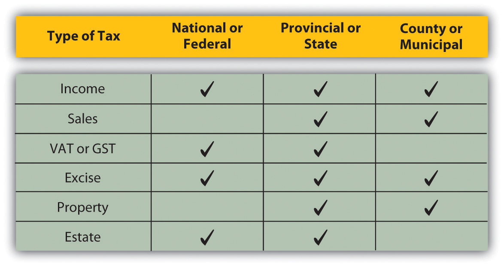
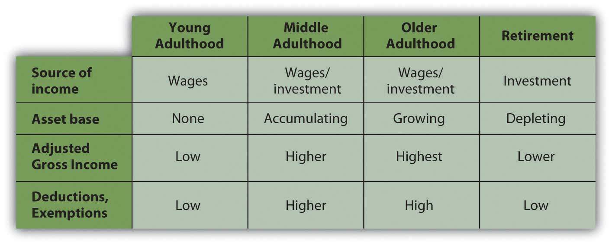

All developed and most less-developed economies have a tax system that finances their governments, at least in part. The design of that tax system reflects the society’s view of the responsibilities of government and of its citizens for their government.
In the United States there has always been disagreement about the role of government as a producer for and a protector of the economy and its citizens. Even before the United States was a nation, “taxation without representation” was a rallying cry for rebellion against the British colonial authority, and the colonists protested taxes on everything from stamps to tea. The American Revolution was as much about economic democracy—the fundamental right of every individual to participate in the economy and to own the fruits of labor—as it was about political democracy.
It is perhaps no coincidence that Adam Smith’s Wealth of Nations was published in 1776, the same year that independence was declared in the thirteen colonies. Smith recognized a role for government in a market-based economy, but societies have argued about what that role should be and how it should be paid for ever since. The U.S. tax code is based on the idea that everyone should help finance the government according to one’s ability to pay. Changes in how “everyone” is defined and how “ability to pay” is measured have led to tax law changes that keep the system evolving.
In the United States, tax laws are written by Congress and therefore through compromise. As views on government financing have changed, tax laws have been amended and refined, enacted and repealed. The result is a tax code that can seem overly complex and even unreasonable or illogical. However, the system is based on logic and has a purpose. The better you understand the elements of the tax system, the better you will understand how to live with it—and plan for it—to your best advantage.
Any government that needs to raise revenue and has the legal authority to do so may tax. Tax jurisdictions reflect government authorities. In the United States, federal, state, and municipal governments impose taxes. Similarly, in many countries there are national, provincial or state, county, and municipal taxes. Regional economic alliances, such as the European Union, may also levy taxes.
Jurisdictions may overlap. For example, in the United States, federal, state, and local governments may tax income, which becomes complicated for those earning income in more than one state, or living in one state and working in another. Governments tax income because it is a way to tax broadly based on the ability to pay. Most adults have an income from some source, even if it is a government distribution. Those with higher incomes should be able to pay more taxes, and in theory should be willing to do so, for they have been more successful in or have benefited more from the economy that the government protects.
Income tax is usually a progressive taxA tax rate that increases as the amount to be taxed increases, a common design of an income tax.: the higher the income or the more to be taxed, the greater the tax rate. The percentage of income that is paid in tax increases as income rises. Those income categories are called tax bracketsA range of income that defines an income tax rate. (Figure 6.2 "U.S. Income Tax Brackets in 2008 (Single Filing Status)").
Figure 6.2 U.S. Income Tax Brackets in 2008 (Single Filing Status)

Tax is levied on income from many sources:
A sales tax or consumption taxA sales or excise tax that taxes the consumption of discretionary and nondiscretionary goods and services. taxes the consumption financed by income. In the United States, sales taxes are imposed by state or local governments; as yet, there is no national sales tax. Sales taxes are said to be more efficient and fair in that consumption reflects income (income determines ability to consume and therefore level of consumption). Consumption also is hard to hide, making sales tax a good way to collect taxes based on the ability to pay. Consumption taxes typically tax all consumption, including nondiscretionary items such as food, clothing, and housing. Opponents of sales tax argue that it is a regressive taxA tax rate that decreases as the amount to be taxed increases., because those with lower incomes must use a higher percentage of their incomes on nondiscretionary purchases than higher-income people do.
The value-added taxA consumption tax that spreads the tax burden among producers and consumers by taxing the value added to goods at each stage of production and consumption. (VAT) or goods and services tax (GST) is widely used outside the United States. It is a consumption tax, but differs from the sales tax, which is paid only by the consumer as an end user. With a VAT or GST, the value added to the product is taxed at each stage of production. Governments use a VAT or GST instead of a sales tax to spread the tax burden among producers and consumers, and thus to reduce incentive to evade the tax. A consumption tax, like the sales tax, it is a regressive tax. When traveling abroad, you should be aware that a VAT may add substantially to the cost of a purchase (a meal, accommodations, etc.).
Excise taxesA tax on a specific item produced within a country. are taxes on specific consumption items such as alcohol, cigarettes, motor vehicles, fuel, or highway use. In some states, excise taxes are justified by the discretionary nature of the purchases and may be criticized as exercises in social engineering (i.e., using the tax code to dictate social behaviors). For example, people addicted to nicotine or alcohol tend to purchase cigarettes or liquor even if an excise tax increases their cost—and are therefore a reliable source of tax revenue.
Property taxes are used by more local—state, municipal, provincial, and county—governments, and are most commonly imposed on real property (land and buildings) but also on personal assets such as vehicles and boats. Property values theoretically reflect wealth (accrued income) and thus ability to pay taxes. Property values are also a matter of public record (real property is deeded, boats or automobiles are licensed), which allows more efficient tax collection.
Estate taxesA tax on the intergenerational transfer of wealth after death. are taxes on the transfer of wealth from the deceased to the living. Estate taxes are usually imposed on the very wealthiest based on their unusual ability to pay. Because death and the subsequent dispersal of property is legally a matter of public record, estate taxes are generally easy to collect. Estate taxes are controversial because they can be seen as a tax on the very idea of ownership and on incomes that have already been taxed and saved or stored as wealth and properties. Still, estate taxes are a substantial source of revenue for the governments that use them, and so they remain.
A summary of the kinds of taxes used by the three different jurisdictions is shown in Figure 6.3 "Taxes and Jurisdictions".
Figure 6.3 Taxes and Jurisdictions
Taxes may be imposed on the following:
Incomes from
Wealth from
Taxes may be
Match the description to the type of tax. (Write the number of the tax type before its description.)
Description:
Type of Tax:
The U.S. government relies most on an income tax. The income tax is the most relevant for personal financial planning, as everyone has some sort of income over a lifetime. Most states model their tax systems on the federal model or base their tax rates on federally defined income. While the estate tax may become more of a concern as you age, the federal income tax system will affect you and your financial decisions throughout your life.
Figure 6.4 "U.S. Individual Tax Form 1040, Page 1" shows an individual tax return, U.S. Form 1040.
Figure 6.4 U.S. Individual Tax Form 1040, Page 1
Figure 6.5 U.S. Individual Tax Form 1040, Page 2
There are four taxable entities in the federal system: the individual or family unit, the corporation, the nonprofit corporation, and the trust. Personal financial planning focuses on your decisions as an individual or family unit, but other tax entities can affect individual income. Corporate profit may be distributed to individuals as a dividendA share of corporate profit distributed to shareholders, usually as cash or corporate stock., for example, which then becomes the individual’s taxable income. Likewise, funds established for a specific purpose may distribute money to an individual that is taxable as individual income. A trustA legal entity created to own and manage assets for the benefit of beneficiaries., for example, is a legal arrangement whereby control over property is transferred to a person or organization (the trustee) for the benefit of someone else (the beneficiary). If you were a beneficiary and received a distribution, that money would be taxable as individual income.
The definition of the taxable “individual” is determined by filing status:
Some taxes are levied differently depending on filing status, following the assumption that family structure affects ability to pay taxes.
All taxable entities have to file a declaration of incomes and pay any tax obligations annually. Not everyone who files a return actually pays taxes, however. Individuals with low incomes and tax exempt, nonprofit corporations typically do not. All potential taxpayers nevertheless must declare income and show their obligations to the government. For the individual, that declaration is filed on Form 1040 (or, if your tax calculations are simple enough, Form 1040EZ).
For individuals, the first step in the process is to calculate total income. Income may come from many sources, and each income must be calculated and declared. Some kinds of income have a separate form or schedule to show their more detailed calculations. The following schedules are the most common for reporting incomes separately by source.
Interest income is income from selling liquidity. For example, the interest that your savings account, certificates of deposit, and bonds earn in a year is income. You essentially are earning interest from lending cash to a bank, a money market mutual fund, a government, or a corporation (though not all your interest income may be taxable). Dividend income, on the other hand, is income from investing in the stock market. Dividends are your share of corporate profits as a shareholder, distributed in proportion to the number of shares of corporate stock you own.
Business income is income from self-employment or entrepreneurial ventures or business enterprises. For sole proprietors and partners in a partnership, business income is the primary source of income. Many other individuals rely on wages, but have a small business on the side for extra income. Business expenses can be deducted from business income, including, for example, business use of your car and home. If expenses are greater than income, the business is operating at a loss. Business losses can be deducted from total income, just as business income adds to total income.
The tax laws distinguish between a business and a hobby that earns or loses money. You are considered to have a business for tax purposes if you made a profit in three of the past five years including the current year, or if you are operating as a registered business with the intention of making a profit. If you are operating your own business you also must also pay self-employment tax on business income. In addition, the self-employed must pay estimated income taxes in quarterly installments based on expected income.
Tariq is thinking about turning his hobby into a business. He has been successful buying and selling South Asian folk art online. He thinks he has found a large enough market to support a business enterprise. As a business he would be able to deduct the costs of Web site promotion, his annual art buying trip, his home office, and shipping, which would reduce the taxes he would have to pay on his business income. Tariq decides to enroll in online courses on becoming an entrepreneur, how to write a business plan, and how to find capital for a new venture.
Self-employment tax is an additional tax on income from self-employment or business income earned by a sole proprietor. It represents the employer’s contribution to Social Security, which is a mandatory retirement savings program of the federal government. Both employers and employees are required to contribute to the employee’s Social Security account. When you are both the employee and the employer, as in self-employment, you must contribute both shares of the contribution.
Gains or losses from investments derive from changes in asset value during ownership between the asset’s original cost and its market value at the time of sale. If you sell an asset for more than you paid for it, you have a gain. If you sell an asset for less than you paid for it, you have a loss. Recurring gains or losses from investment are from returns on financial instruments such as stocks and bonds. One-time gains or losses, such as the sale of a home, are also reported on Schedule D.
The tax code distinguishes between assets held for a short time—less than one year, and assets held for a long time—one year or more. Short-term capital gains or losses are taxed at a different rate than long-term capital gains or losses (Figure 6.8 "Capital Gains Tax Rates"). When you invest in financial assets, such as stocks, bonds, mutual funds, property, or equipment, be sure to keep good records by noting the date when you bought them and the original price. These records establish the cost basisThe original cost of an asset that is used to calculate a gain (loss) upon sale of the asset. of your investments, which is used to calculate your gain or loss when you sell them.
Figure 6.8 Capital Gains Tax Rates

Rental or royalty income is income earned from renting an asset, either real property or a creative work such as a book or a song. This can be a primary source of income, although many individuals rely on wages and have some rental or royalty income on the side. Home ownership may be made more affordable, for example, if the second half of a duplex can be rented for extra income. Rental expenses can also be deducted from rental income, which can create a loss from rental activity rather than a gain. Unlike a business, which must become profitable to remain a business for tax purposes, rental activities may generate losses year after year. Such losses are a tax advantage, as they reduce total income.
Partnerships and S corporations are alternative business structures for a business with more than one owner. For example, partnerships and S corporations are commonly used by professional practices, such as accounting firms, law firms, medical practices, and the like, as well as by family businesses.
The partnership or S corporation is not a taxable entity, but the share of its profits distributed to each owner is taxable income for the owner and must be declared on Schedule E.
Farm income is income from growing food, livestock, or livestock products, such as wool, to sell. Farmers have a special status in the tax code, stemming from the original agricultural basis of the U.S. economy and the strategic importance of self-sufficiency in food production. Thus, the tax code applies exemptions specifically to farmers.
Other taxable income includes alimony, state or local tax refunds, retirement fund distributions from individual retirement accounts (IRAs) and/or pensions, unemployment compensation, and a portion of Social Security benefits.
Your total income is then adjusted for items that the government feels should not be taxed under certain circumstances, such as certain expenses of educators, performing artists, and military reservists; savings in health savings or retirement accounts; moving expenses; a portion of self-employment taxes; student loan interest; tuition and educational fees; and alimony paid. Income that is not taxed by the U.S. government and does not have to be reported as income includes the following:
It’s important to read tax filing instructions carefully, however, because not everything you’d think would qualify actually does. The government allows adjustments to be reported (or not reported) as income only under certain circumstances or up to certain income limits, and some adjustments require special forms.
The result of deducting adjustments from your total income is a calculation of your adjusted gross income (AGI). Your AGI is further adjusted by amounts that may be deducted or exempted from your taxable income and by amounts already credited to your tax obligations.
Deductions and exemptions reduce taxable income, while credits reduce taxes. Deductions are tax breaks for incurring certain expenditures or living in certain circumstances that the government thinks you should not have to include in your taxable income. There are deductions for age and for blindness. For other deductions, there is a standard, lump-sum deduction that you can take, or you may choose to itemize your deductions, that is, detail each one separately and then calculate the total. If your itemized deductions are more than your standard deduction, it makes sense to itemize.
Other deductions involve financial choices that the government encourages by rewarding an extra incentive in the form of a tax break. Home mortgage interest is a deduction to encourage home ownership, for example; investment interest is a deduction to encourage investment, and charitable donations are deductions to encourage charitable giving.
Deductions are also created for expenditures that may be considered nondiscretionary, such as medical and dental expenses, job-related expenses, or state and local income and property taxes. As with income adjustments, you have to read the instructions carefully, however, to know what expenditures qualify as deductions. Some deductions only qualify if they amount to more than a certain percentage of income, while others may be deducted regardless. Some deductions require an additional form to calculate specifics, such as unreimbursed employee or job-related expenses, charitable gifts not given in cash, investment interest, and some mortgage interest.
There are exemptions based on the number of your dependents, who are usually children, but may be elderly parents or disabled siblings, that is, relatives who generally cannot care for themselves financially. Exemptions are made for dependents as nondiscretionary expenditures, but the government also encourages individuals to care for their financially dependent children, parents, and siblings because without such care they might become dependents of a government safety net or a charity.
After deductions and exemptions are subtracted from adjusted gross income, the remainder is your taxable income. Your tax is based on your taxable income, on a progressive scale. You may have additional taxes, such as self-employment tax, and you may be able to apply credits against your taxes, such as the earned income credit for lower-income taxpayers with children.
Deductions, exemptions, and credits are some of the more disputed areas of the tax code. Because of the depth of dispute about them, they tend to change more frequently than other areas of the tax code. For example, in 2009, a credit was added to encourage first-time homebuyers to purchase a home in the hopes of stimulating the residential real estate market. As a taxpayer, you want to stay alert to changes that may be to your advantage or disadvantage. Usually, such changes are phased in and out gradually so you can include them in your financial planning process.
Once you have calculated your tax obligation for the year, you can compare that to any taxes you have paid during the year and calculate the amount still owed or the amount to be refunded to you.
You pay taxes during the tax year by having them withheld from your paycheck if you earn income through wages, or by making quarterly estimated tax payments if you have other kinds of income. When you begin employment, you fill out a form (Form W-4) that determines the taxes to be withheld from your regular pay. You may adjust this amount, within limits, at any time. If you have both wages and other incomes, but your wage income is your primary source of income, you may be able to increase the taxes withheld from your wages to cover the taxes on your other income, and thus avoid having to make estimated payments. However, if your nonwage income is substantial, you will have to make estimated payments to avoid a penalty and/or interest.
The government requires that taxes are withheld or paid quarterly during the tax year because it uses tax revenues to finance its expenditures, so it needs a steady and predictable cash flow. Steady payments also greatly decrease the risk of taxes being uncollectible. State and local income taxes must also be paid during the tax year and are similarly withheld from wages or paid quarterly.
Besides income taxes, other taxes are withheld from your wages: payments for Social Security and Medicare. Social Security or the Federal Insurance Contributions Act (FICA) and Medicare are federal government programs. Social Security is insurance against loss of income due to retirement, disability, or loss of a spouse or parent. Individuals are eligible for benefits based on their own contributions—or their spouse’s or parents’—during their working lives, so technically, the Social Security payment withheld from your current wages is not a tax but a contribution to your own deferred income. Medicare finances health care for the elderly. Both programs were designed to provide minimal benefits to those no longer able to sell their labor in exchange for wage income. In fact, both Social Security and Medicare function as “pay-as-you-go” systems, so your contributions pay for benefits that current beneficiaries receive.
If you have paid more during the tax year than your actual obligation, then you are due a refund of the difference. You may have that amount directly deposited to a bank account, or the government will send you a check.
If you have paid less during the tax year than your actual obligation, then you will have to pay the difference (by check or credit card) and you may have to pay a penalty and/or interest, depending on the size of your payment.
The deadline for filing income tax returns and for paying any necessary amounts is April 15, following the end of the tax year on December 31. You may file to request an extension of that deadline to August 15. Should you miss a deadline without filing for an extension, you will owe penalties and interest, even if your actual tax obligation results in a refund. It really pays to get your return in on time.
Download and study the following schedules or their equivalent for the current year. In what circumstances would you have to file each one? Tentatively fill out any schedules that apply to you for the current year.
Find answers to the following questions at http://www.finaid.org/scholarships/taxability.phtml.
The Internal Revenue Code (IRC), the federal tax law, is written by the U.S. Congress and enforced by the Internal Revenue Service (IRS), which is a part of the U.S. Department of Treasury. The IRS is responsible for the collection of tax revenues. To collect revenues, the IRS must inform the public of tax obligations and devise data collection systems that will allow for collection and verification of tax information so that collectible revenues can be verified. In other words, the IRS has to figure out how to inform the public and collect taxes while also collecting enough information to be able to check that those taxes are correct.
To inform the public, the IRS has published over six hundred separate publications covering various aspects of the tax code. There are more than a thousand forms and accompanying instructions to file complete tax information, although most taxpayers actually file about half a dozen forms each year. In addition, the IRS provides a Web site (http://www.irs.gov) and telephone support to answer questions and assist in preparing tax filings.
By far, most income taxes from wages are collected through withholding as earned. For most taxpayers, wages represent the primary form of income, and thus most of their tax payments are withheld or paid as wages are earned. Still, everyone has to file to summarize the details of the year’s incomes for the IRS and to calculate the final tax obligation. In 2007, the IRS collected 138,893,908 individual returns representing $1.367 trillion of tax revenue.Statistics of Income Division and Other Areas of the Internal Revenue Service, http://www.irs.gov/taxstats (accessed January 19, 2009).
The individual filer must collect and report the information on tax forms and schedules. Fortunately, this is not as difficult as the volume of data would suggest. Employers are required to send Form W-2 to each employee at the end of the year, detailing the total wages earned and taxes and contributions withheld. If you have earned other kinds of income, your clients, customers, retirement fund, or other source of income may have to file a Form 1099 to report that income to you and to the IRS. Interest and dividend income is also reported by the bank or brokerage firm on Form 1099. The W-2 and the Form 1099 are reported to both the IRS and you.
The system for filing tax information has purposeful redundancies. Where possible, information is collected independently from at least two sources, so it can be verified. For example, your wage data is collected both from you and from your employer, your interest and dividend incomes are reported by both you and the bank or brokerage that paid them, and so on. Those redundancies, wherever practical, allow for a system of cross-references so that the IRS can check the validity of the data it receives.
Incomes may be summarized and reported to you, but only you know your expenses. Expenditures are important if they are allowed as deductions, such as charitable gifts, medical and dental expenses, job-related expenses, and so on, so data should be collected throughout the tax year. If you do nothing more than keep a checkbook, then you will have to go through it and identify the deductible expenses for the tax year. Financial software applications will make that task easier; most allow you to flag deductible expenses in your initial setup.
You should also keep receipts of purchases that may be deductible; credit or debit card statements and bank statements provide convenient backup proof of expenditures. Proof is needed in the event the IRS questions the accuracy of your return.
After you have collected the information you need, you fill out the forms. The tax code is based on the idea that citizens should create revenues for the government based on their ability to pay—and the tax forms follow that logic. Most taxpayers need to complete only a few schedules and forms to supplement their Form 1040 (or 1040 EZ). Most taxpayers have the same kinds of taxable events, incomes, and deductions year after year and file the same kinds of schedules and forms.
Many taxpayers prefer to consult a professional tax preparer. Professional help is useful if you have a relatively complicated tax situation: unusual sources of income or expenditures that may be deductible under unusual circumstances. Some taxpayers use a tax preparer simply to protect against making a mistake and having the error, however, innocent, prove costly to fix. Fees for tax preparers depend on how complex your return is, the number of forms that need to be completed, and the type of professional you consult.
Professional tax preparers may be lawyers, accountants, personal financial planners, or tax consultants. You may have an ongoing relationship with your tax preparer who may also be your accountant or financial planner, working with you on other financial decisions. Or you may consult a tax preparer simply on tax issues. You may want your tax preparer to fill out and file the forms for you, or you may be looking for advice about future financial decisions that have tax consequences. Tax preparers may be independent practitioners who work during tax season, or employees of a national chain that provide year-round tax services.
There is no standard certification to be a professional tax preparer. An enrolled agent is someone who has successfully passed training courses from the IRS. A certified public accountant (CPA) has specific training and experience in accounting. When looking for a tax preparer, your lawyer, accountant, or financial planner may be appropriate or may be able to make a recommendation. If your information is fairly straightforward, you may minimize costs by using a preparer who simply does taxes. If your situation involves more complications, especially involving other entities such as businesses or trusts, or unusual circumstances such as a gain, gift, or distribution, you may want to consult a professional with a range of expertise, such as an accountant or a lawyer who specializes in taxes. Many professionals also offer a “guarantee,” that is, that they will also help you if the information on your return is later questioned by the IRS.
Whether you prepare your tax return by yourself or with a professional, it is you who must sign the return and assume responsibility for its details. You should be sure to review your return with your tax preparer so that you understand and can explain any of the information found on it. You should question anything that you cannot understand or that seems contrary to your original information. You should also know your tax return because understanding how and why tax obligations are created or avoided can help you plan for tax consequences in future financial decisions.
You may choose to prepare the return yourself using a tax preparation software application. There are many available, and several that are compatible with personal financial software applications, enabling you to download or transfer data from your financial software directly into the tax software. Software applications are usually designed as a series of questions that guide you through Form 1040 and the supplemental schedules, filling in the data from your answers. Once you have been through the “questionnaire,” it tells you the forms it has completed for you, and you can simply print them out to submit by mail or “e-file” them directly to the IRS. Most programs also allow you to enter data into the individual forms directly.
Many tax preparation software packages are available, and many are reviewed in the business press or online. Some popular programs include the following (see http://tax-software- review.toptenreviews.com):
Software can be useful in that it automatically calculates unusual circumstances, limitations, or exceptions to rules using your complete data. Some programs even prompt you for additional information based on the data you submit. Overlooking exceptions is a common error that software programs can help you avoid. The programs have all the forms and schedules, but if you choose to file hard copy versions, you can download them directly from the IRS Web site, or you can call the IRS and request that they be sent to you. Once your return is completed, you must file it with the IRS, either by mail or by e-file, which has become increasingly popular.
After you file your tax return it will be processed and reviewed by the IRS. If you are owed a refund, it will be sent; if you paid a payment, it will be deposited. The IRS reviews returns for accuracy, based on redundant reporting and its “sense” of your data. For example, the IRS may investigate any discrepancies between the wages you report and the wages your employer reports. As another example, if your total wages are $23,000 and you show a charitable contribution of $20,000, that contribution seems too high for your income—although there may be an explanation.
The IRS may follow up by mail or by a personal interview. It may just ask for verification of one or two items, or it may conduct a full auditA review of tax calculations and obligations performed by the Internal Revenue Service (IRS).—a thorough financial investigation of your return. In any case, you will be asked to produce records or receipts that will verify your reported data. Therefore, it is important to save a copy of your return and the records and receipts that you used to prepare it. The IRS has the following recommendations for the number of years to save your tax data:
If you have a personal interview, your tax preparer may accompany you to help explain and verify your return. Ultimately, however, you are responsible for it. If you have made errors, and if those errors result in a larger tax obligation (if you owe more), you may have to pay penalties and interest in addition to the tax you owe. You may be able to negotiate a payment schedule with the IRS.
The IRS randomly chooses a certain number of returns each year for review and possible audit even where no discrepancies or unusual items are noticed. The threat of a random audit may deter taxpayers from cheating or taking shortcuts on their tax returns. Computerized record keeping has made it easier for both taxpayers and the IRS to collect, report, and verify tax data.
Most citizens recognize the need to contribute to the government’s revenues but want to avoid paying more than they need to. Tax avoidanceThe legal attempt to minimize tax obligations. is the practice of ensuring that you have no excess tax obligations. Strategies for minimizing or avoiding tax obligations are perfectly legal. However, tax evasionThe illegal attempt to report financial information fraudulently to minimize tax obligations.—fraudulently reporting tax obligations, for example, by understating incomes and gains or overstating expenses and losses—is illegal.
Timing can affect the value of taxable incomes or deductibles expenses. If you anticipate a significant increase in income—and therefore in your tax rate—in the next tax year, you may try to defer a deductible expense. When you have more income and it is taxed at a higher rate, a deductible expense may be worth more as a tax savings to offset your income. For example, if your tax rate is 20 percent and your deductible expense of $100 saves you from paying taxes on $100, then it saves you $20 in taxes. If your tax rate is 35 percent, that same $100 deductible saves you $35. Likewise, if you anticipate a decrease in income that will decrease your tax rate, you may want to defer receipt of income until the next year when it will be taxed at a lower rate. In addition, some kinds of incomes are taxed at different rates than others, so how your income is created may bear on how much tax it creates.
The definition of expenses and the way you claim them can affect the tax they save. You may be able to deduct more expenses if you itemize your deductions than if you do not, or it may not make a difference. Also, there is some discretion in classifying expenses. For example, suppose you are a high school Spanish teacher. You also tutor students privately. You buy Spanish books to improve your own language skills and to keep current with the published literature. Are the costs of those books an unreimbursed employee expense related to your job as a teacher, or are they an expense of your private tutoring business?
They may be both, but you can only claim the expense once or in one place on your tax return. If you claim it as an employment-related expense, your ability to deduct the cost may be limited, but if it is a cost of your tutoring business, you may be able to fully expense it from your business income.
An income that is not taxed or taxed at a lower rate is more valuable than an income that is taxed or taxed at a higher rate. An expense that is fully deductible is more valuable than an expense that is not. Taxes deferred—by delaying income or accelerating expense—create more liquidity and thus more value. However, taxable income is still income, and a deductible expense is still an expense. Tax consequences should not obscure the benefits of enjoying income and the costs of incurring expenses.
There are many ideas about how to avoid an audit or what will trigger one: certain kinds of incomes or expenses, or filing earlier or later, for example. In truth, with the increased sophistication of computerization, the review process is much better at noticing real discrepancies and at choosing audits randomly. Time and effort (and cost) invested in outsmarting a possible audit is usually wasted. The best protection against a possible audit is to have verification—a receipt or a bill or a canceled check—for all the incomes and expenses that you report.
You may anticipate significant changes in income or expenses based on a change of job or career, or a change of life stage or lifestyle. Not only may the amounts of income or expenses change, but the kinds of incomes or expenses may change as well. Planning for those changes in relation to tax obligations is part of personal financial planning.
Tax obligations change more broadly as your stage of life changes. Although everyone is different, there is a typical pattern to aging, earning, and taxes, as shown in Figure 6.15 "Life Stages and Tax Implications".
Figure 6.15 Life Stages and Tax Implications
In young adulthood, you rely on income from wages, and you usually have yet to acquire an asset base, so you have little income from interest, dividends, or capital gains. Your family structure does not include dependents, so you have few deductions but also low taxable income.
As you progress in your career, you can expect wages, expenses, and dependents to increase. You are building an asset base by buying a home, possibly saving for your children’s education, or saving for retirement. Because those are the kinds of assets encouraged by the government, they not only build wealth but also create tax advantages—the mortgage interest deduction, retirement, or education savings exemption.
In older adulthood, you may begin to build an asset base that can no longer provide those tax advantages that are limited or may create taxable income such as interest, dividends, or rental income. In retirement, most people can anticipate a significant decrease in income from wages and a significant increase in reliance on incomes from investments such as interest, dividends, and gains. Some of those assets may be retirement savings accounts, such as an Individual Retirement Account (IRA) or 401(k) that created tax advantages while growing, but will create tax obligations as income is drawn from them.
Generally, you can expect your income to increase during your middle adult life, but that is when many people typically have dependents and deductions such as mortgage interest and job-related expenses to offset increased tax obligations. As you age, and especially when you retire, you can expect less income and also fewer deductions: any kids have left home, the mortgage in paid off.
The bigger picture is that at the stages of your life when income is increasing, so are your deductions and exemptions, which tend to decrease as your income decreases. Although your incomes change over your lifetime, you tax obligations change proportionally, so they remain relative to your ability to pay.
The tax consequences of such changes should be anticipated and considered as you evaluate choices for financial strategies. Because the tax code is a matter of law it does change, but because it is also a matter of politics, it changes slowly and only after much public discussion. You can usually be aware of any tax code changes far enough in advance to incorporate them into your planning.
Tax advantages are sometimes created for personal financial strategies as a way of encouraging certain personal goals. In the United States, as in most developed economies, certain goals such as home ownership, retirement savings, and education and health financing are seen as personal goals that benefit society as well as the individual.
In most cases, tax advantages are created to encourage progress toward those goals. For example, most people can buy a home only if they can use debt financing, which creates added costs. So mortgage interest, that added cost, is tax deductible (up to a limit) to make home financing and therefore home ownership more affordable and attractive.
Retirement saving is encouraged, so some savings plans such as an IRA or a defined contributionA tax-advantaged pension plan, such as a 401(k), that both employer and employee may contribute to and that does not pay an obligated or defined benefit at maturity. plan such as a 401(k) or a 403b (so named for the sections of the Internal Revenue Code that define them) create tax advantages. The deposits made to those plans may be used to reduce taxable income, although there are limits to the amount of those deposits. There are also retirement savings strategies that do not create tax advantages, such as saving outside of a tax-advantaged account. There are limited tax-advantaged savings accounts for education savings and health care expenses as well.
Where you have a choice, it makes sense to use a strategy that will allow you to make progress toward your goal and realize a tax advantage. Your enthusiasm for the tax advantage should not define your goals, however. Taxes affect the value of your alternatives, so recognizing tax implications should inform your choices without defining your goals.
Unanticipated events such as an inheritance, a gift, lottery winnings, casualty and theft losses, or medical expenses can also have tax consequences. They are often unusual events (and therefore unanticipated) and may be unfamiliar and financially complicated. In those circumstances it may be wise to consult an expert.
Your financial plans should reflect your vision for your life: what you want to have, how you want to get it, how you want to protect it. You will want to be aware of tax advantages or disadvantages, but tax consequences should not drive your vision. You would not buy a house with a mortgage only to get the mortgage interest deduction, for example. However, if you are buying a home, you can plan to do so in the most tax-advantageous way.
As Supreme Court Justice Oliver Wendell Holmes, Jr., said, “Taxes are what we pay for a civilized society.”U.S. Department of the Treasury, http://www.treas.gov/education/faq/taxes/taxes-society.shtml (accessed January 19, 2009). Like any costs, you want to minimize your tax costs of living and of life events, but tax avoidance is only a means to an end. You should make your life choices for better reasons than avoiding taxes.
“Friends and neighbors complain that taxes are indeed very heavy, and if those laid on by the government were the only ones we had to pay, we might the more easily discharge them; but we have many others, and much more grievous to some of us. We are taxed twice as much by our idleness, three times as much by our pride, and four times as much by our folly.”
Benjamin FranklinBenjamin Franklin, “As Certain as Death—Quotations About Taxes,” compiled and arranged by Jeffrey Yablon, in Tax Notes, January 5, 2004; retrieved from http://www.taxanalysts.com/www/features.nsf/Articles/B613CDAB6D2554218525770000641571?OpenDocument (accessed May 23, 2012).